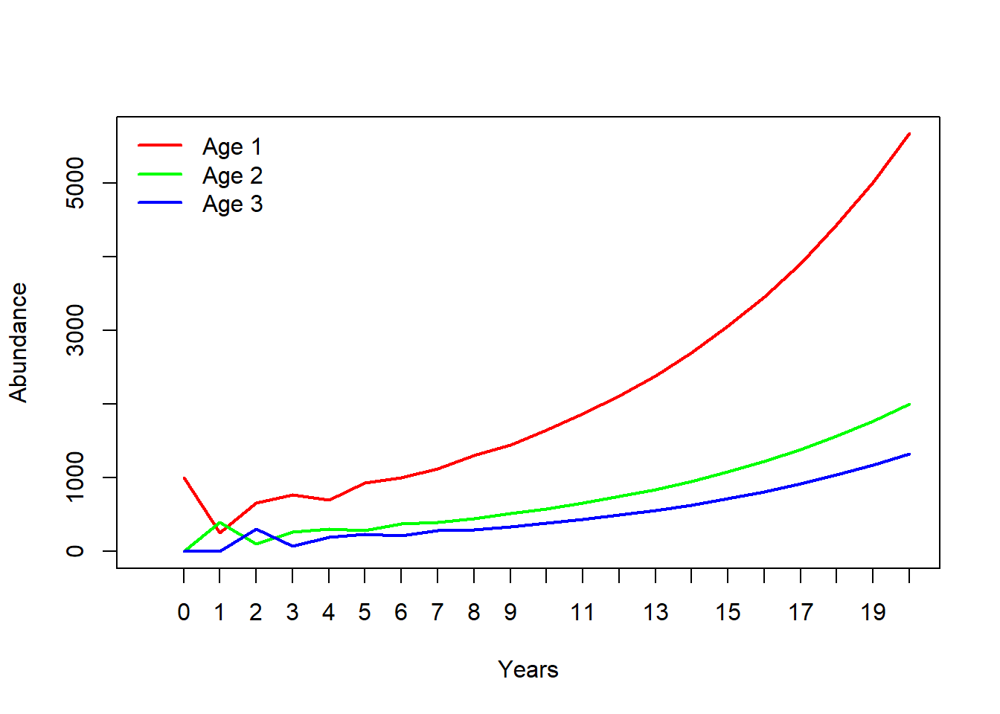

Lab 4: Matrix population models
NRES 470/670
Spring 2023
In this lab we will continue to work with age-structured populations: specifically, we will get familiar with matrix projection models! Remember that while matrix population models may look complicated, they are just a modified version of the discrete exponential growth model: \(N_{t+1}=\lambda \cdot N_t\).
If you want to follow along in R, you can find the R script here. I recommend right-clicking on the link, saving the script to a designated folder, and loading up the script in RStudio.
Mathematics of matrix population models:
We all remember the discrete population growth equation:
\(N_{t+1}=\lambda \cdot N_t \qquad \text{(Eq. 1)}\),
where \(N\) represents abundance (as always), \(t\) is time (often in years), and \(\lambda\) is the multiplicative growth rate over the time period \(t \rightarrow t+1\)
In other words, \(\lambda\) is the number you multiply this years abundance by to compute next year’s abundance.
The matrix population growth equation looks pretty much the same!
\(\mathbf{N}_{t+1} = \mathbf{A} \cdot \mathbf{N}_{t} \qquad \text{(Eq. 2)}\),
where \(\mathbf{N}\) is a vector of abundances (a ‘package’ of numbers representing abundances for each life stage), and \(\mathbf{A}\) is the transition matrix (a ‘package’ of numbers representing per-capita transition rates among life stages from one year to the next).
We can be more explicit about this if we re-write the above equation this way:
\(\begin{bmatrix}N_1\\ N_2\\N_3 \end{bmatrix}_{t+1}=\begin{bmatrix}F_1 & F_2 & F_3\\ P_{1 \rightarrow 2} & P_{2 \rightarrow 2} & 0\\ 0 & P_{2 \rightarrow 3} & P_{3 \rightarrow 3}\end{bmatrix} \cdot \begin{bmatrix}N_1\\ N_2\\N_3 \end{bmatrix}_{t} \qquad \text{(Eq. 3)}\)
Where \(P_{1 \rightarrow 2}\) is the probability of advancing from Stage 1 to Stage 2 (fraction of Stage 1 individuals that survive and transition to Stage 2), and \(F_2\) is the fecundity of stage 2 (per-capita offspring production by individuals that started the year in Stage 2).
The Transition Matrix
The transition matrix must be a square matrix – meaning that the number of rows is the same as the number of columns. There must be the same number of rows and columns as there are life stages for the species you are modeling. If there are 5 life stages, your transition matrix must have five rows and five columns.
Age structured model (Leslie matrix)
The term ‘Leslie Matrix’ refers to a specific type of matrix population model where each stage represents one year of life (this is an age-structured model.
In this class, we will assume that the first age class represents newborns, or age-0 individuals.
In a Leslie matrix, no individuals can ever stay the same age for more than one year (obviously). So, terms like \(P_{2 \rightarrow 2}\), or \(P_{3 \rightarrow 3}\) must be set to zero by definition.
Each age class is associated with only one survival rate, and this rate involves transitioning to the next age (one year older!). That is, survival is represented by only one term per age: e.g., \(P_{2 \rightarrow 3}\), or \(P_{3 \rightarrow 4}\)
For a Leslie matrix, the final year of life must have a survival rate of zero. Why? Because no individual can survive past the final year of life!
In this class, we will always assume that reproduction occurs at the very end of each time step.
This means that all fecundity terms in our transition matrices must be computed as the product of survival and birth rate (i.e., you must survive to the next year before you can reproduce!)
In a Leslie Matrix, the term \(F_0\) must be computed as the probability of surviving, \(P_{0 \rightarrow 1}\) and the per-capita birth rate associated with one-year-olds, \(b(1)\):
\(F_0=P_{0 \rightarrow 1}\cdot b(1)\)
Similarly,
\(F_1=P_{1 \rightarrow 2}\cdot
b(2)\)
\(F_2=P_{2 \rightarrow 3}\cdot
b(3)\)
\(F_3=P_{3 \rightarrow 4}\cdot
b(4)\)
Here’s an example of an age-structured (Leslie) matrix:
\(\begin{bmatrix}N_0\\ N_1\\N_2\\ N3 \end{bmatrix}_{t+1}=\begin{bmatrix}F_0 & F_1 & F_2 & 0\\ P_{1 \rightarrow 2} & 0 & 0&0\\ 0 & P_{2 \rightarrow 3} & 0 &0\\ 0 & 0 & P_{2 \rightarrow 3} &0\end{bmatrix} \cdot \begin{bmatrix}N_0\\ N_1\\N_2\\N3 \end{bmatrix}_{t} \qquad \text{(Eq. 3)}\)
Stage structured model (Lefkovitch matrix)
When a matrix is used to represent a stage-structured population, it is often called a ’Lefkovitch” Matrix.
NOTE: survival P in a stage-structured transition matrix is NOT necessarily the same thing as survival rate (e.g., g(x) from a life table). What’s the difference? The answer is that survivors from one age class may end up in more than one class. For example, some fraction of Stage 2 individuals may survive but remain in Stage 2 next year (\(P_{2 \rightarrow 2}\)). Another subset of survivors may end up in Stage 3 (\(P_{2 \rightarrow 3}\)). Together, these two rates (added together) represent the total survival of Stage 2 individuals!
In contrast: in a Leslie matrix, all individuals must either transition to the next stage or die. Always remember that (just like in a Leslie matrix) fecundity F in a stage transition matrix is NOT the same thing as the age-specific per-capita birth rates b(x) from a life table.
Instead, the Fecundity terms in a stage-transition matrix \(F_{S}\) also takes into account the survival rate to the next time step (e.g., \(P_{S1 \rightarrow S2}\))!! For an adult of stage \(S\) to contribute to the next generation, it must first survive to the next time step before it can reproduce!.
\(F_S = P_{this \space year \rightarrow next \space year} \cdot b(next \space year) \qquad \text{(Eq. 4)}\)
Computation of fecundity can get fairly complicated, but if you start to get confused, always return to this basic principle: fecundity is survival times birth rate.
\(F_1=P_{1 \rightarrow 1}\cdot b(1) + P_{1
\rightarrow 2}\cdot b(2)\)
\(F_2=P_{2 \rightarrow 2}\cdot b(2) + P_{2
\rightarrow 3}\cdot b(3)\)
\(F_3=P_{3 \rightarrow 3}\cdot b(3) + P_{3
\rightarrow 4}\cdot b(4)\)
Matrix operations:
There is a lot we can do with matrix population models. The most obvious one is projection:
Projection:
This lab demo contains a bunch of R code (R makes it pretty easy to run matrix population models!).
If you want to follow along in R, you can find the R script here.
We have already seen the matrix projection equation (Eq. 2, above). Here is how we can implement this in R:
# Matrix projection in R ---------------------
# Syntax for projecting abundance using a transition matrix (NOTE: this code won't run until we specify the terms on the right)
# Year1 <- projection_matrix %*% Abundance_year0 # matrix multiplication!Let’s try it:
First, build a projection matrix:
# First, build a simple projection matrix called TMat
TMat <- matrix( #
c(
0.4, 1.9, 0,
0.4, 0, 0,
0, 0.75, 0
)
,nrow=3,ncol=3,byrow=T
)
TMat # print to the console to check!## [,1] [,2] [,3]
## [1,] 0.4 1.90 0
## [2,] 0.4 0.00 0
## [3,] 0.0 0.75 0Q: is this an age-structured (Leslie) or stage-structured (Lefkovitch) matrix?
Next, let’s build an initial abundance vector:
# Then we specify initial abundances for the three age classes
InitAbund <- c(1000,0,0) # initial abundance vector
InitAbund # print to the console to check!## [1] 1000 0 0Now we can run our first projection- this time, we will use the transition matrix to compute the abundance vector for year 1!
# Now we can run the code for real
# project year-1 abundance:
Year1 <- TMat %*% InitAbund # matrix multiplication in R uses the symbol '%*%'
Year1## [,1]
## [1,] 400
## [2,] 400
## [3,] 0Now we have 300 individuals in stage 2!
Let’s project one more year:
# Project year-2 abundance
Year2 <- TMat %*% Year1 # matrix multiplication!
Year2## [,1]
## [1,] 920
## [2,] 160
## [3,] 300Finally, here is some code to project many years into the future! You may want to re-use some of this code for the exercises below.
# Multi-year projection code ----------------------------
# You may want to modify this code for the examples below:
# Set key parameters -----------------------
nYears <- 20 # set the number of years to project
TMat <- matrix( #
c(
0.4, 1.9, 0,
0.4, 0, 0,
0, 0.75, 0
)
,nrow=3,ncol=3,byrow=T
)
InitAbund <- c(1000,0,0) # initial abundance vector
AgeStructured <- TRUE # set to TRUE for Leslie matrix and FALSE for Lefkovitch
# Use a FOR loop for multi-year projection -------------
# NOTE: the code below can be re-used without modification:
allYears <- matrix(0,nrow=nrow(TMat),ncol=nYears+1) # build a storage array for all stages and all years!
allYears[,1] <- InitAbund # set the year 0 abundance
for(t in 2:(nYears+1)){ # loop through all years
allYears[,t] <- TMat %*% allYears[,t-1]
}
plot(1,1,pch="",ylim=c(0,max(allYears)),xlim=c(0,nYears+1),xlab="Years",ylab="Abundance",xaxt="n") # set up blank plot
cols <- rainbow(ncol(TMat)) # set up colors to use
for(s in 1:ncol(TMat)){
points(allYears[s,],col=cols[s],type="l",lwd=2) # plot out each life stage abundance, one at a time
}
axis(1,at=seq(1,nYears+1),labels = seq(0,nYears)) # label the axis
if(AgeStructured){
leg <- paste("Age",seq(0,(ncol(TMat))-1))
}else{
leg <- paste("Stage",seq(1,ncol(TMat)))
}
legend("topleft",col=cols,lwd=rep(2,ncol(TMat)),legend=leg,bty="n") # put a legend on the plot
Compute lambda
Clearly this is a growing population. But let’s see exactly what \(\lambda\) is!
NOTE: we are using a “package” in R to make these analyses super easy! So if you don’t already have the “popbio” package, go to the “Packages” tab in Rstudio (should be at the top of the lower right panel), click on “Install”, and then type “popbio” in the “Packages” field in the pop-up window, then click on the “Install” button.
# Use 'popbio' package to compute lambda and SSD -----------
# Use the following line of code if you haven't installed 'popbio' yet. Once you've installed it, you can delete the line or comment this line out by adding a pound sign before the "i" in "install.packages"
# install.packages("popbio") # uncomment this line to run - you only need to do this once
# Use the 'popbio' package to compute lambda (NOTE: you first have to install the popbio package! You only have to install the package once...)
library(popbio) # load the 'popbio' package in R
lambda(TMat)## [1] 1.094427Pretty easy!
Compute stable stage distribution (S.S.D.)
Clearly the population doesn’t reach a stable age distribution until a few years into our simulation. What exactly is the stable age distribution here? We can do this in R:
# Use the 'popbio' package to compute the stable age distribution!
stable.stage(TMat)## [1] 0.6188298 0.2261749 0.1549954Let’s get started with running some matrix-based population models!
Exercise 1: age-structured (Leslie) matrix projection models!
In this exercise, you will have a chance to play around with an age-structured (Leslie) matrix population model. But first, you are asked to translate a life table into an age-structured transition matrix!
Here is the life table: Excel
format
CSV format
| x | S(x) | b(x) |
|---|---|---|
| 0 | 1000 | 0.0 |
| 1 | 231 | 1.1 |
| 2 | 165 | 3.9 |
| 3 | 45 | 3.9 |
| 4 | 9 | 0.8 |
| 5 | 0 | 0.0 |
Translate the above life table into an age-structured (Leslie) transition matrix with five ages: age 0 (newborns), age 1 (yearlings), age 2, age 3, and age 4. You don’t need to include age 5 because no individuals ever make it there!
Keep the following points in mind:
- Individuals are in the “age 0” stage if they are between the ages of
0 and 1. They transition to the “age 1” stage (\(P_{0 \rightarrow 1}\)) if they survive to
age 1 (thereby entering their second year of life).
- For individuals of the “age 0” class to contribute new offspring to
the population in the next time step (\(F_0\)), they have to survive their first
year of life (\(P_{0 \rightarrow 1}\))
AND produce offspring when they are exactly 1 year of age (which they do
at the rate of \(b(1)\) – the birth
rate at age 1).
- Use five age classes for your transition matrix (age class 0 through
4). Individuals in the final age class (age class 4) have zero survival
(you can’t survive to age 5) and zero fecundity (if no 4-year-olds
survive the whole year, how can they reproduce at the end of that
year?)
- No individual ever stays the same age - they either transition to the next age or they die (this is a Leslie Matrix model).
NOTE: Gotelli uses the term ‘age class 1’ to refer to individuals in their first year of life (0-year-olds) and ‘age class 2’ for individuals in their second year of life (one-year-olds), but I think it’s easier to think of this as age 0, age 1, etc. That way, our age classes will match the way we usually talk about age in years!
1a (image upload). Upload an image file of the full transition matrix (25 numbers, arranged in 5 rows and 5 columns) to WebCampus. To maximize your chance for partial credit, include all calculations you needed to arrive at your final solution.
1b (short answer). Describe (in words) how you computed the number in row 1, column 3 of your matrix (fecundity of 2-year-olds).
You will need to use R for the next few questions. Make sure you have the ‘popbio’ package installed in your R session!
You will need to enter your matrix from 1a into R, using something like the following:
# Construct a five-age matrix:
TMat <- matrix( #
c(
0.4, 1.9, 1.1, 0.4, 0,
0.4, 0, 0, 0, 0,
0, 0.75, 0, 0, 0,
0, 0, 0.65, 0, 0,
0, 0, 0, 0.22, 0
)
,nrow=5,ncol=5,byrow=T
)
TMat## [,1] [,2] [,3] [,4] [,5]
## [1,] 0.4 1.90 1.10 0.40 0
## [2,] 0.4 0.00 0.00 0.00 0
## [3,] 0.0 0.75 0.00 0.00 0
## [4,] 0.0 0.00 0.65 0.00 0
## [5,] 0.0 0.00 0.00 0.22 01c (short answer- one number). What is the finite rate of growth \(\lambda\) for this population?
1d (short answer). Based on this result, is this a growing population? A declining population? (HINT: use the ‘lambda()’ function from the popbio package)
1e (short answer- 5 numbers). What is the stable-stage distribution (SSD) for this population (fraction of the population in each age after the simulation stabilizes)? (HINT: use the ‘stable.stage()’ function from the popbio package) (HINT: a complete answer to this question requires exactly 5 numbers)
1f (short answer- 5 numbers). Assuming an initial population size of 1000 at stable stage distribution (SSD; see answer from 1d), how many individuals would you have in each of the five ages? (NOTE: you can’t have fractional individuals, so please round to the nearest whole numbers).
Next, use R to project this population for 30 years (you can re-use much of the code supplied above). Initialize your population with 1000 individuals at stable age distribution (your answer from part 1e.
1g. (short answer- one number). What is the total number of 3-year-olds in the population after 30 years?
1h. (short answer- one number). What is the total population abundance (sum of abundances across all ages) after 30 years?
Finally, run your simulation again, this time starting with all 1000 individuals in age-class 0 (all newborns!) instead of distributing them across all ages. This time, run your model for 50 years.
1i (image upload). Upload an image (plot) of abundance over time for all ages. The x-axis should represent time in years (years 0 to 50), and the y axis should represent abundance. The plot should include 5 lines, one for each age. (HINT: you can re-use the R code above to produce this plot).
Exercise 2: translate InsightMaker to age-structured projection matrix!
Return to the InsightMaker model you created in Lab 3 (exercise 3 – that is, an age structured population model. Your model should look something like this:

Make sure the parameters are at the original values specified in Exercise 3 of Lab 3 (before altering mortality rates as part of lab 3 question 3e). As a reminder, here they are again:
- For birth rates, set Birth rate, age 1 at 1.6 and Birth
rate, age 2 at 2.2.
- For transition rates, set Transition rate, Age 0 to 1 at
0.4 and Transition rate, Age 1 to 2 at 0.3. NOTE: these
transition rates could also be called “survival rates”
- For the mortality rates, note that all individuals in the Age 0 stock must either transition to Age 1 or die. In addition, all individuals in the Age 2 stock must die- there is no Age 3 class!
Translate this InsightMaker model into a projection matrix with three rows and three columns. Pay close attention to the difference between survival (transition to the next stage class) and mortality (mortality is equal to one minus survival).
2a (image upload). Upload an image file of the full transition matrix (9 numbers, arranged in 3 rows and 3 columns) to WebCampus. To maximize your chance for partial credit, include all calculations you needed to arrive at your final solution.
Starting with 75 individuals, all in Age 0 (75 newborns, 0 yearlings, 0 2-year-olds), project this population 20 years into the future, using both InsightMaker and R.
2b (image upload). Upload an image (plot) of abundance over time for all ages, produced using R. The x-axis should represent time in years (years 0 to 20), and the y axis should represent abundance. The plot should include 3 lines, one for each age. (HINT: you can re-use the R code above to produce this plot).
2c (image upload). Upload an image (plot) of abundance over time for all ages, produced using InsightMaker. The x-axis should represent time in years (years 0 to 20), and the y axis should represent abundance. The plot should include 3 lines, one for each age.
HINT: check your answers to 2b and 2c by comparing the two plots: These plots should look essentially identical!
Now let’s build an InsightMaker model based on a population matrix!
Exercise 3: translate stage-structured projection matrix to Insightmaker!
Use the following stage matrix to answer questions 3a-b
Here is a stage-based matrix to use for building your InsightMaker model:
Click here to download the CSV
file.
Click here to download the same matrix
as an Excel file.
stmat <- read.csv("stage_matrix1.csv")
stmat <- as.matrix(stmat[,-1])
rownames(stmat) <- colnames(stmat)
stmat## Stage1 Stage2 Stage3
## Stage1 0.08 0.40 0.77
## Stage2 0.39 0.14 0.00
## Stage3 0.00 0.49 0.81# lambda(stmat) Build an InsightMaker model that represents the same population as the stage-based matrix above. Remember that the top row represents fecundity terms, while the bottom rows represent transition terms. Also remember how to convert between survival rates and mortality rates (mortality equals one minus survival). Initialize the model with 100 individuals at stable stage distribution (SSD).
3a (short answer). Provide the URL to your InsightMaker model (and remember to clone your Insight to ensure that you don’t alter the model once you submit it).
Next, project this population 20 years into the future using both R AND InsightMaker.
3b (image upload). Upload an image (plot) of abundance over time for all ages, produced using R. The x-axis should represent time in years (years 0 to 20), and the y axis should represent abundance. The plot should include 3 lines, one for each age.
3c (image upload). Upload an image (plot) of abundance over time for all ages, produced using InsightMaker. The x-axis should represent time in years (years 0 to 20), and the y axis should represent abundance. The plot should include 3 lines, one for each age.
HINT: check your answers to 3b and 3c by comparing the two plots: These plots should look essentially identical!
NOTE: In this class we have stressed the importance of density dependence in determining and regulating the dynamics of real populations. Were any of the population models in this lab density-dependent? [Answer: NO!]
Exercise 4. Translate written population description to projection matrix!
As a test of your understanding, try to implement the following passage as a matrix projection model:

We assumed that the red-tailed hawk life history could be described in terms of three major life stages: hatchling (first year of life), juvenile (largely individuals in their second year of life), and adult (generally the third year of life and beyond). We assumed that adult females experienced an average of 15% mortality each year. Juvenile female mortality was set at 30% per year. Approximately 10% of juvenile females remain in the juvenile phase each year, and all other survivors transition to the adult stage. Finally, hatchlings had a 21% chance of surviving and transitioning to become juveniles. Adults are the primary reproductive stage, and produce an average of 6 new hatchlings each year, half of which are female. Juveniles that fail to transition to the Adult stage tend to produce only 1.8 new hatchlings each year on average, half of which are female. We ran a female-only matrix population model, and we initialized the population with 800 hatchlings, 150 juveniles, and 50 adults.
4a (image upload). Upload an image file of the full transition matrix (9 numbers, arranged in 3 rows and 3 columns) to WebCampus. To maximize your chance for partial credit, include all calculations you needed to arrive at your final solution.
4b (short answer: three numbers). How many hatchlings, juveniles and adults would there be in the population at time 0 if you were to initialize the population at S.A.D.? Use the same initial population size as the example above (1000 total individuals at time 0).
4c (one number). What is the finite growth rate, Lambda, for this population?
##Checklist for Lab 4 completion
Please submit all responses using Top Hat!
As always, URLs for your InsightMaker models should be pasted in your lab submission (in Top Hat). See details below…
Due Fri Mar. 10 at 11:59pm
- Word document with short answers
- Exercise 1
- image upload (1a.)
- short answer (1b.)
- short answer (1c.)
- short answer (1d.)
- short answer (1e.)
- short answer (1f.)
- short answer (1g.)
- short answer (1h.)
- image upload (1i.)
- image upload (1a.)
- Exercise 2
- image upload (2a.)
- image upload (2b.)
- image upload (2c.)
- Exercise 3
- short answer (3a.)
- image upload (3b.)
- image upload (3c.)
- Exercise 3
- image upload (4a.)
- short answer (4b.)
- short answer (4c.)
- Exercise 1
—End of Lab 4—-